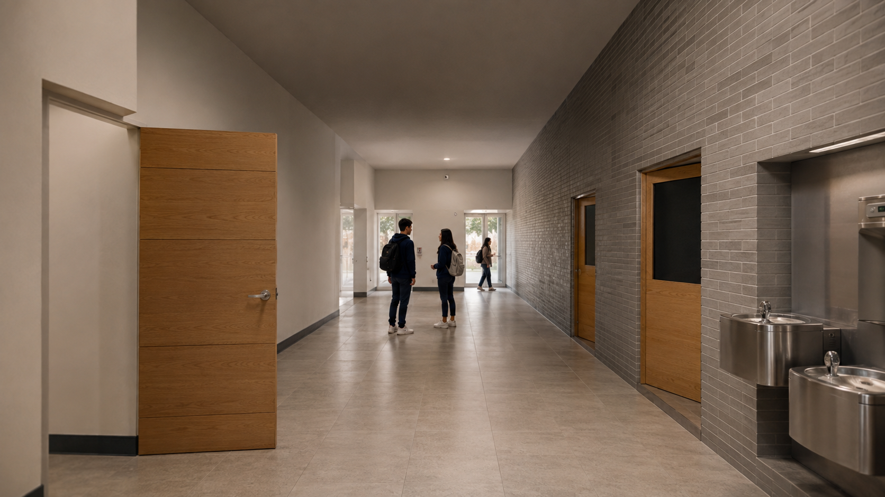
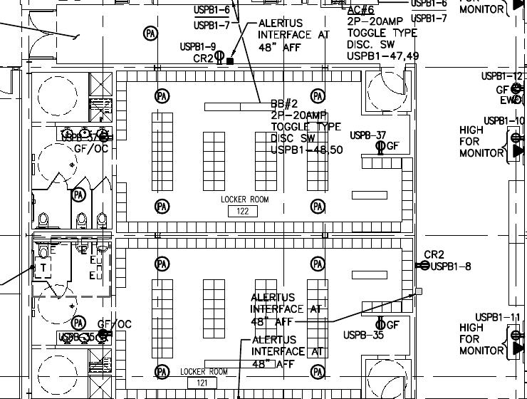

Picture 1: Exact overhead layout and room mask

Geometry, framing, scale, positions and black boundary authority.
Download reference 1Revision 11: first-frame image-to-video. Only the overhead opening image is included. Appearance references are removed; details are in the prompt. Select minimax_h3_fl2va_pruned_int8_convrot.safetensors in the diffusion-model loader. CGlide FL2VA mode has only FIRST filled. Reimport the new package with Project > Open.
Upload in numbered order. Picture 1 controls layout; all other images supply only their stated attributes. Fixed top-down, 12 seconds, students walking. Open prompt · Upload instructions · All rooms
Download CGlide project package / All CGlide projects
Geometry, framing, scale, positions and black boundary authority.
Download reference 1
Transfer photographic materials, fully clothed student appearance and fine surface detail only. This eye-level image is NOT a camera, layout, furniture-count or location reference; do not transfer depth of field.
Download reference 2
Fixture and locker configuration detail only. Picture 1 controls exact camera, registration and visible positions. Do not render plan labels or electrical symbols.
Download reference 3